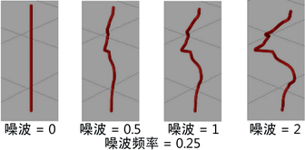
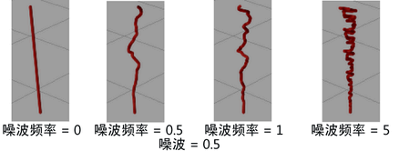
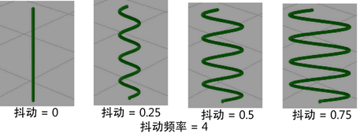
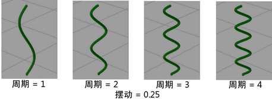
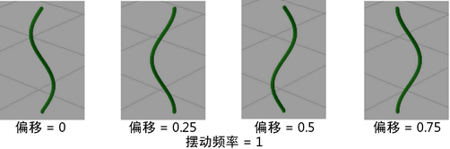
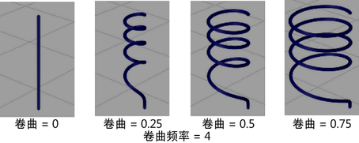
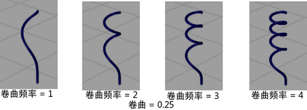

对于任何笔刷节点，以下选项将在“Paint Effects 笔刷设置”(Paint Effects Brush Settings)窗口和属性编辑器中显示为部分的子集。
使用这些选项可以置换笔划中完全制成的管的最终位置，从而将它们扭曲到新的形状中。可以应用噪波、摆动和卷曲置换。
- 置换延迟(Displacement Delay)
-
定义置换沿管（从根部开始）完全生效位置处的点。置换值渐变到该点。如果该值为 0，置换从管根部开始完全生效。如果该值设定为 0.5，置换从管长度的中点位置开始完全生效（以分段为单位）。如果该值为 1，置换在最大管长度处开始完全生效。

- 噪波(Noise)
-
定义要应用于管分段的位置的随机变化量。管必须包含许多分段以供您查看效果（以下示例中包含 20 个分段）。请参见 Paint Effects 笔刷设置的创建笔刷设置部分中的“分段”(Segments)设置。
 - 噪波频率(Noise Frequency)
-
定义最大长度的管上的分段位置变化量。
 - 噪波偏移(Noise Offset)
-
定义沿管向下的噪波置换的转换。该设置有助于为变亮效果设置动画。
- 抖动(Wiggle)
-
定义要应用于管的“抖动”量。“抖动”(Wiggle)由重复的波浪曲线定义。“抖动”(Wiggle)值定义波浪的振幅。
管必须包含许多分段以供您查看效果（以下示例中包含 100 个分段）。请参见 Paint Effects 笔刷设置的创建笔刷设置部分中的“分段”(Segments)设置。
 - 抖动频率(Wiggle Frequency)
-
定义最大长度的管上应用的抖动数。该值越大，沿管长度的“抖动”就越多。
 - 抖动偏移(Wiggle Offset)
-
定义抖动沿波浪的开始位置。您可以为该参数设置动画以使波浪看起来像沿管长度向下移动。
 - 卷曲(Curl)
-
定义使管卷曲的宽度。该值越大，卷曲就越宽。管必须包含许多分段以供您查看效果（以下示例中包含 200 个分段）。请参见 Paint Effects 笔刷设置的创建笔刷设置部分中的“分段”(Segments)设置。
 - 卷曲频率(Curl Frequency)
-
定义最大长度的管上应用的卷曲数。如果增大卷曲频率，您可能还需要增加管中的分段数以获得平滑的结果。请参见 Paint Effects 笔刷设置的创建笔刷设置部分中的“分段”(Segments)设置。
 - 卷曲偏移(Curl Offset)
-
卷曲是一个重复的图案。“卷曲偏移”(Curl Offset)定义卷曲在图案中的开始位置。您可以为“卷曲偏移”(Curl Offset)设置动画以使卷曲看起来像沿管长度向下移动。